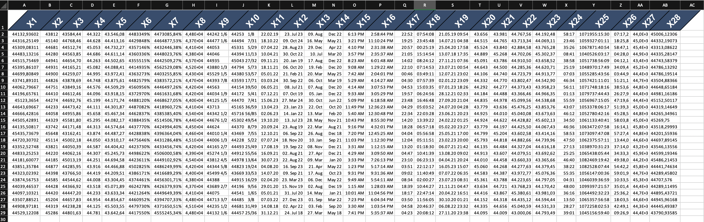
5 Styling of worksheets
Welcome to the styling manual for openxlsx2. In this manual you will learn how to use openxlsx2 to style your worksheets. data from xlsx-files to R as well as how to export data from R to xlsx, and how to import and modify these openxml workbooks in R.
5.1 Colors, text rotation and number formats
Below we show you two ways how to create styled tables with openxlsx2 one using the high level functions to style worksheet areas and one using the bare metal approach of creating the identical table. We show both ways to create styles in openxlsx2 to show how you could build on our functions or create your very own functions.
5.1.1 the quick way: using high level functions
# add some dummy data
set.seed(123)
mat <- matrix(rnorm(28 * 28, mean = 44444, sd = 555), ncol = 28)
colnames(mat) <- make.names(seq_len(ncol(mat)))
border_col <- wb_color(theme = 1)
border_sty <- "thin"
# prepare workbook with data and formated first row
wb <- wb_workbook() |>
wb_add_worksheet("test") |>
wb_add_data(x = mat) |>
wb_add_border(dims = "A1:AB1",
top_color = border_col, top_border = border_sty,
bottom_color = border_col, bottom_border = border_sty,
left_color = border_col, left_border = border_sty,
right_color = border_col, right_border = border_sty,
inner_hcolor = border_col, inner_hgrid = border_sty
) |>
wb_add_fill(dims = "A1:AB1", color = wb_color(hex = "FF334E6F")) |>
wb_add_font(dims = "A1:AB1", name = "Arial", bold = TRUE,
color = wb_color(hex = "FFFFFFFF"), size = 20) |>
wb_add_cell_style(dims = "A1:AB1", horizontal = "center", text_rotation = 45)
# create various number formats
x <- c(
0, 1, 2, 3, 4, 9, 10, 11, 12, 13, 14, 15, 16, 17, 18, 19, 20, 21, 22,
37, 38, 39, 40, 45, 46, 47, 48, 49
)
# apply the styles
for (i in seq_along(x)) {
cell <- sprintf("%s2:%s29", int2col(i), int2col(i))
wb <- wb |> wb_add_numfmt(dims = cell, numfmt = x[i])
}
# wb$open()5.1.2 the long way: using bare metal functions
# create workbook
wb <- wb_workbook() |> wb_add_worksheet("test")
# add some dummy data to the worksheet
set.seed(123)
mat <- matrix(rnorm(28 * 28, mean = 44444, sd = 555), ncol = 28)
colnames(mat) <- make.names(seq_len(ncol(mat)))
wb$add_data(x = mat, col_names = TRUE)
# create a border style and assign it to the workbook
black <- wb_color(hex = "FF000000")
new_border <- create_border(
bottom = "thin", bottom_color = black,
top = "thin", top_color = black,
left = "thin", left_color = black,
right = "thin", right_color = black
)
wb$styles_mgr$add(new_border, "new_border")
# create a fill style and assign it to the workbook
new_fill <- create_fill(patternType = "solid",
fgColor = wb_color(hex = "FF334E6F"))
wb$styles_mgr$add(new_fill, "new_fill")
# create a font style and assign it to the workbook
new_font <- create_font(sz = 20, name = "Arial", b = TRUE,
color = wb_color(hex = "FFFFFFFF"))
wb$styles_mgr$add(new_font, "new_font")
# create a new cell style, that uses the fill, the font and the border style
new_cellxfs <- create_cell_style(
num_fmt_id = 0,
horizontal = "center",
text_rotation = 45,
fill_id = wb$styles_mgr$get_fill_id("new_fill"),
font_id = wb$styles_mgr$get_font_id("new_font"),
border_id = wb$styles_mgr$get_border_id("new_border")
)
# assign this style to the workbook
wb$styles_mgr$add(new_cellxfs, "new_styles")
# assign the new cell style to the header row of our data set
cell <- sprintf("A1:%s1", int2col(nrow(mat)))
wb <- wb |> wb_set_cell_style(
dims = cell,
style = wb$styles_mgr$get_xf_id("new_styles")
)
## style the cells with some builtin format codes (no new numFmt entry is
## needed). add builtin style ids
x <- c(
1, 2, 3, 4, 9, 10, 11, 12, 13, 14, 15, 16, 17, 18, 19, 20, 21, 22,
37, 38, 39, 40, 45, 46, 47, 48, 49
)
# create styles
new_cellxfs <- create_cell_style(num_fmt_id = x, horizontal = "center")
# assign the styles to the workbook
for (i in seq_along(x)) {
wb$styles_mgr$add(new_cellxfs[i], paste0("new_style", i))
}
# new styles are 1:28
new_styles <- wb$styles_mgr$get_xf()
for (i in as.integer(new_styles$id[new_styles$name %in%
paste0("new_style", seq_along(x))])) {
cell <- sprintf("%s2:%s29", int2col(i), int2col(i))
wb <- wb |> wb_set_cell_style(dims = cell, style = i)
}
# assign a custom tabColor
wb$worksheets[[1]]$sheetPr <- xml_node_create(
"sheetPr",
xml_children = xml_node_create(
"tabColor",
xml_attributes = wb_color(hex = "FF00FF00")
)
)
# # look at the beauty you've created
# wb_open(wb)5.2 Working with number formats
5.2.1 numfmts
Per default openxlsx2 will pick up number formats for selected R classes.
## Create Workbook object and add worksheets
wb <- wb_workbook()
wb$add_worksheet("S1")
wb$add_worksheet("S2")
df <- data.frame(
"Date" = Sys.Date() - 0:19,
"T" = TRUE, "F" = FALSE,
"Time" = Sys.time() - 0:19 * 60 * 60,
"Cash" = 1:20, "Cash2" = 31:50,
"hLink" = "https://CRAN.R-project.org/",
"Percentage" = seq(0, 1, length.out = 20),
"TinyNumbers" = runif(20) / 1E9, stringsAsFactors = FALSE
)
## openxlsx will apply default Excel styling for these classes
class(df$Cash) <- c(class(df$Cash), "currency")
class(df$Cash2) <- c(class(df$Cash2), "accounting")
class(df$hLink) <- "hyperlink"
class(df$Percentage) <- c(class(df$Percentage), "percentage")
class(df$TinyNumbers) <- c(class(df$TinyNumbers), "scientific")
wb$add_data("S1", x = df, start_row = 4, row_names = FALSE)
wb$add_data_table("S2", x = df, start_row = 4, row_names = FALSE)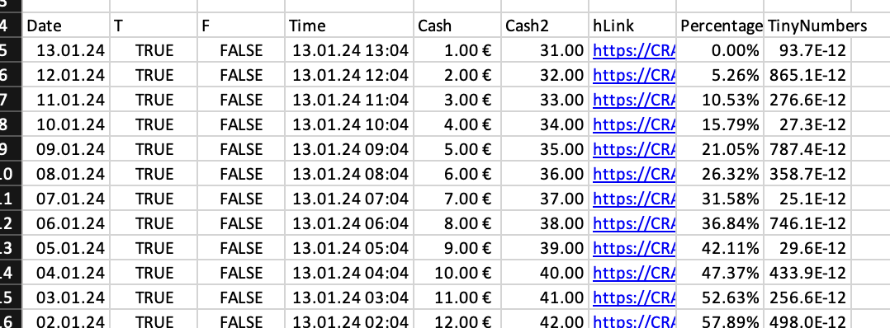
5.2.2 numfmts2
In addition, you can set the style to be picked up using openxlsx2 options.
wb <- wb_workbook()
wb <- wb_add_worksheet(wb, "test")
options("openxlsx2.dateFormat" = "yyyy")
options("openxlsx2.datetimeFormat" = "yyyy-mm-dd")
options("openxlsx2.numFmt" = "€ #.0")
df <- data.frame(
"Date" = Sys.Date() - 0:19,
"T" = TRUE, "F" = FALSE,
"Time" = Sys.time() - 0:19 * 60 * 60,
"Cash" = 1:20, "Cash2" = 31:50,
"hLink" = "https://CRAN.R-project.org/",
"Percentage" = seq(0, 1, length.out = 20),
"TinyNumbers" = runif(20) / 1E9, stringsAsFactors = FALSE,
"numeric" = 1
)
## openxlsx will apply default Excel styling for these classes
class(df$Cash) <- c(class(df$Cash), "currency")
class(df$Cash2) <- c(class(df$Cash2), "accounting")
class(df$hLink) <- "hyperlink"
class(df$Percentage) <- c(class(df$Percentage), "percentage")
class(df$TinyNumbers) <- c(class(df$TinyNumbers), "scientific")
wb$add_data("test", df)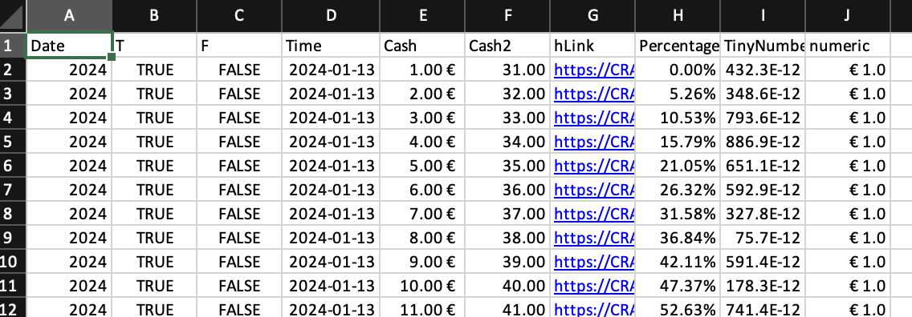
5.3 Modifying the column and row widths
5.3.1 wb_set_col_widths
wb <- wb_workbook() |>
wb_add_worksheet() |>
wb_add_data(x = mtcars, row_names = TRUE)
cols_1 <- 1:6
cols_2 <- "G:L"
wb <- wb |>
wb_set_col_widths(cols = cols_1, widths = "auto") |>
wb_set_col_widths(cols = cols_2, widths = 10)5.3.2 wb_set_row_heigths
wb <- wb |>
wb_set_row_heights(rows = 1:10, heights = 10)5.4 Adding borders
5.4.1 add borders
wb <- wb_workbook()
# full inner grid
wb$add_worksheet("S1", grid_lines = FALSE)$add_data(x = mtcars)
wb$add_border(
dims = "A2:K33",
inner_hgrid = "thin", inner_hcolor = wb_color(hex = "FF808080"),
inner_vgrid = "thin", inner_vcolor = wb_color(hex = "FF808080")
)
# only horizontal grid
wb$add_worksheet("S2", grid_lines = FALSE)$add_data(x = mtcars)
wb$add_border(dims = wb_dims(x = mtcars, select = "data"), inner_hgrid = "thin",
inner_hcolor = wb_color(hex = "FF808080"))
# only vertical grid
wb$add_worksheet("S3", grid_lines = FALSE)$add_data(x = mtcars)
wb$add_border(dims = wb_dims(x = mtcars, select = "data"),
inner_vgrid = "thin", inner_vcolor = wb_color(hex = "FF808080"))
# no inner grid
wb$add_worksheet("S4", grid_lines = FALSE)$add_data(x = mtcars)
wb$add_border("S4", dims = wb_dims(x = mtcars, select = "data"))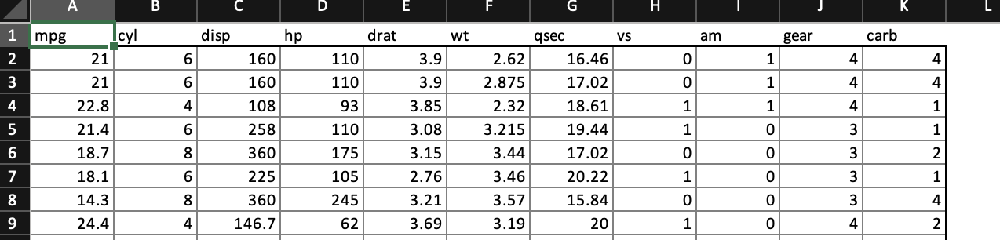
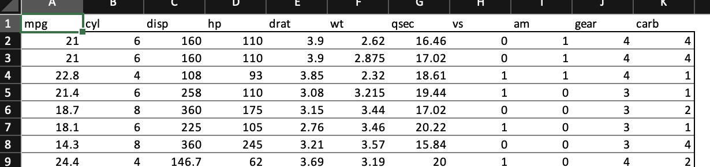
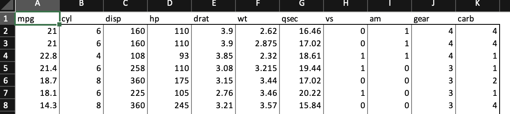
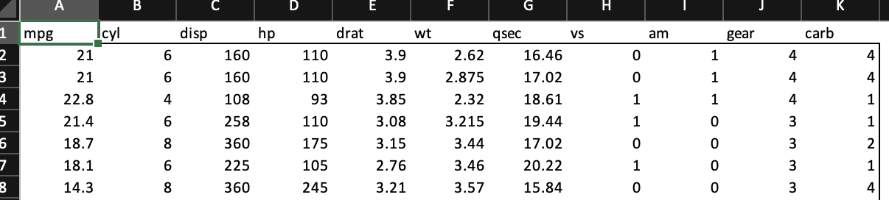
5.4.2 styled table
Below we show you two ways how to create styled tables with openxlsx2 one using the high level functions to style worksheet areas and one using the bare metal approach of creating the identical table.
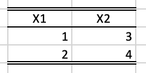
5.4.2.1 the quick way: using high level functions
# add some dummy data to the worksheet
mat <- matrix(1:4, ncol = 2, nrow = 2)
colnames(mat) <- make.names(seq_len(ncol(mat)))
dims_head <- wb_dims(x = mat, from_col = 2, from_row = 2, select = "col_names")
dims_data <- wb_dims(x = mat, from_col = 2, from_row = 2, select = "data")
wb <- wb_workbook() |>
wb_add_worksheet("test") |>
wb_add_data(x = mat, col_names = TRUE, start_col = 2, start_row = 2) |>
# center first row
wb_add_cell_style(dims = dims_head, horizontal = "center") |>
# add border for first row
wb_add_border(
dims = dims_head,
bottom_color = wb_color(theme = 1), bottom_border = "thin",
top_color = wb_color(theme = 1), top_border = "double",
left_border = NULL, right_border = NULL
) |>
# add border for last row
wb_add_border(
dims = dims_data,
bottom_color = wb_color(theme = 1), bottom_border = "double",
top_border = NULL, left_border = NULL, right_border = NULL
)5.4.2.2 the long way: creating everything from the bone
# add some dummy data to the worksheet
mat <- matrix(1:4, ncol = 2, nrow = 2)
colnames(mat) <- make.names(seq_len(ncol(mat)))
wb <- wb_workbook() |>
wb_add_worksheet("test") |>
wb_add_data(x = mat, start_col = 2, start_row = 2)
# create a border style and assign it to the workbook
black <- wb_color(hex = "FF000000")
top_border <- create_border(
top = "double", top_color = black,
bottom = "thin", bottom_color = black
)
bottom_border <- create_border(bottom = "double", bottom_color = black)
wb$styles_mgr$add(top_border, "top_border")
wb$styles_mgr$add(bottom_border, "bottom_border")
# create a new cell style, that uses the fill, the font and the border style
top_cellxfs <- create_cell_style(
numFmtId = 0,
horizontal = "center",
borderId = wb$styles_mgr$get_border_id("top_border")
)
bottom_cellxfs <- create_cell_style(
numFmtId = 0,
borderId = wb$styles_mgr$get_border_id("bottom_border")
)
# assign this style to the workbook
wb$styles_mgr$add(top_cellxfs, "top_styles")
wb$styles_mgr$add(bottom_cellxfs, "bottom_styles")
# assign the new cell style to the header row of our data set
cell <- "B2:C2"
wb <- wb |> wb_set_cell_style(dims = cell,
style = wb$styles_mgr$get_xf_id("top_styles"))
cell <- "B4:C4"
wb <- wb |> wb_set_cell_style(dims = cell,
style = wb$styles_mgr$get_xf_id("bottom_styles"))5.5 Use workbook colors and modify them
The loop below will apply the tint attribute to the fill color
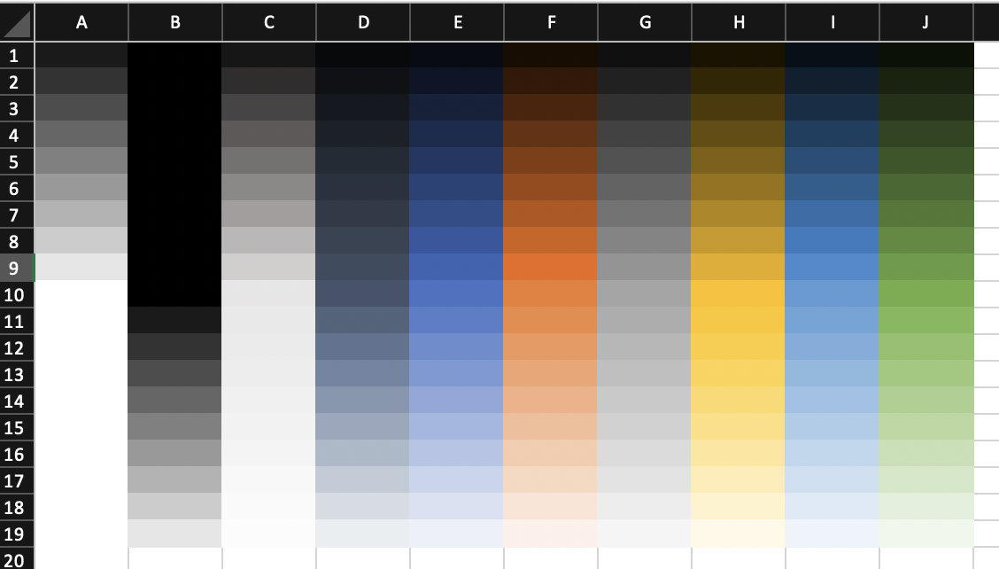
wb <- wb_workbook() |> wb_add_worksheet("S1")
tints <- seq(-0.9, 0.9, by = 0.1)
for (i in 0:9) {
for (tnt in tints) {
col <- paste0(int2col(i + 1), which(tints %in% tnt))
if (tnt == 0) {
wb <- wb |> wb_add_fill(dims = col,
color = wb_color(theme = i))
} else {
wb <- wb |> wb_add_fill(dims = col,
color = wb_color(theme = i, tint = tnt))
}
}
}5.6 Copy cell styles
It is possible to copy the styles of several cells at once. In the following example, the styles of some cells from a formatted workbook are applied to a previously empty cell range. Be careful though, wb_get_cell_style() returns only some styles, so you have to make sure that the copy-from and copy-to dimensions match in a meaningful way.
xl <- system.file("extdata", "oxlsx2_sheet.xlsx", package = "openxlsx2")
wb <- wb_load(xl)
wb$set_cell_style(1, "A30:G35", wb$get_cell_style(1, "A10:G15"))
# wb_open(wb)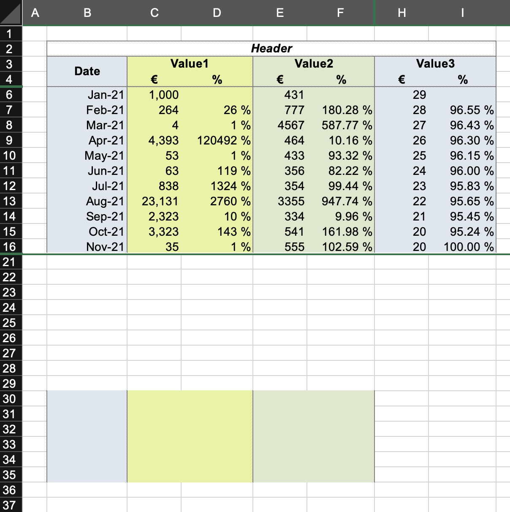
5.7 Style strings
Using fmt_txt() is possible to style strings independently of the cell containing the string.
txt <-
fmt_txt("Embracing the full potential of ") +
fmt_txt("openxlsx2", bold = TRUE, size = 16) +
fmt_txt(" with ") +
fmt_txt("fmt_txt()", font = "Courier") +
fmt_txt(" !")
wb <- wb_workbook()$add_worksheet()$add_data(x = txt, col_names = FALSE)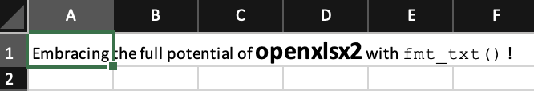
As shown above it is possible to combine multiple styles together into a longer string. It is even possible to use fmt_txt() as na.strings:
df <- mtcars
df[df < 4] <- NA
na_red <- fmt_txt("N/A", color = wb_color("red"), italic = TRUE, bold = TRUE)
wb <- wb_workbook()$add_worksheet()$add_data(x = df, na.strings = na_red)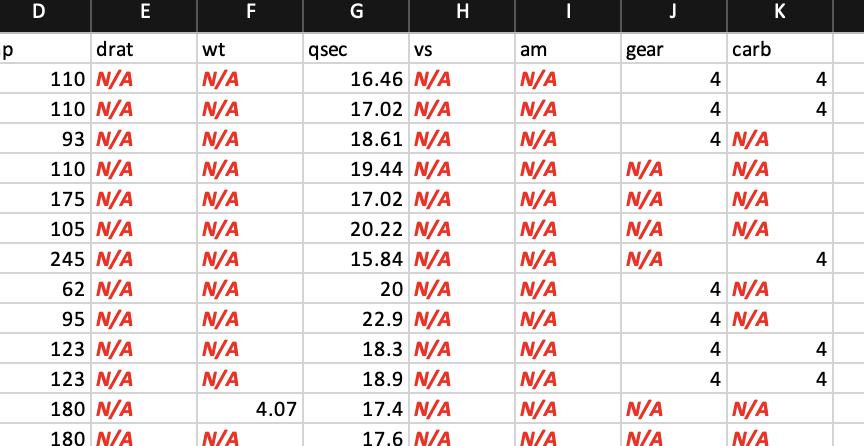
5.8 Create custom table styles
With create_tablestyle() it is possible to create your own table styles. This function uses create_dxfs_style() (just like your spreadsheet software does). Therefore, it is not quite as user-friendly. The following example shows how the function creates a red table style. The various dxfs styles must be created and assigned to the workbook (similar styles are used in conditional formatting). In create_tablestyle() these styles are assigned to the table style elements. Once the table style is created, it must also be assigned to the workbook. After that you can use it in the workbook like any other table style.
# a red table style
dx0 <- create_dxfs_style(
border = TRUE,
left_color = wb_color("red"),
right_color = NULL, right_style = NULL,
top_color = NULL, top_style = NULL,
bottom_color = NULL, bottom_style = NULL
)
dx1 <- create_dxfs_style(
border = TRUE,
left_color = wb_color("red"),
right_color = NULL, right_style = NULL,
top_color = NULL, top_style = NULL,
bottom_color = NULL, bottom_style = NULL
)
dx2 <- create_dxfs_style(
border = TRUE,
top_color = wb_color("red"),
left_color = NULL, left_style = NULL,
right_color = NULL, right_style = NULL,
bottom_color = NULL, bottom_style = NULL
)
dx3 <- create_dxfs_style(
border = TRUE,
top_color = wb_color("red"),
left_color = NULL, left_style = NULL,
right_color = NULL, right_style = NULL,
bottom_color = NULL, bottom_style = NULL
)
dx4 <- create_dxfs_style(
text_bold = TRUE
)
dx5 <- create_dxfs_style(
text_bold = TRUE
)
dx6 <- create_dxfs_style(
font_color = wb_color("red"),
text_bold = TRUE,
border = TRUE,
top_style = "double",
left_color = NULL, left_style = NULL,
right_color = NULL, right_style = NULL,
bottom_color = NULL, bottom_style = NULL
)
dx7 <- create_dxfs_style(
font_color = wb_color("white"),
text_bold = TRUE,
bgFill = wb_color("red"),
fgColor = wb_color("red")
)
dx8 <- create_dxfs_style(
border = TRUE,
left_color = wb_color("red"),
top_color = wb_color("red"),
right_color = wb_color("red"),
bottom_color = wb_color("red")
)
wb <- wb_workbook() |>
wb_add_worksheet(grid_lines = FALSE)
wb$add_style(dx0)
wb$add_style(dx1)
wb$add_style(dx2)
wb$add_style(dx3)
wb$add_style(dx4)
wb$add_style(dx5)
wb$add_style(dx6)
wb$add_style(dx7)
wb$add_style(dx8)
# finally create the table
xml <- create_tablestyle(
name = "red_table",
whole_table = wb$styles_mgr$get_dxf_id("dx8"),
header_row = wb$styles_mgr$get_dxf_id("dx7"),
total_row = wb$styles_mgr$get_dxf_id("dx6"),
first_column = wb$styles_mgr$get_dxf_id("dx5"),
last_column = wb$styles_mgr$get_dxf_id("dx4"),
first_row_stripe = wb$styles_mgr$get_dxf_id("dx3"),
second_row_stripe = wb$styles_mgr$get_dxf_id("dx2"),
first_column_stripe = wb$styles_mgr$get_dxf_id("dx1"),
second_column_stripe = wb$styles_mgr$get_dxf_id("dx0")
)
wb$add_style(xml)
# create a table and apply the custom style
wb <- wb |>
wb_add_data_table(x = mtcars, table_style = "red_table")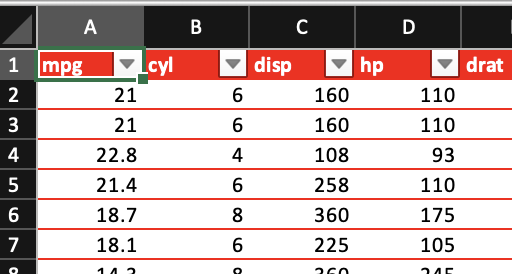
5.9 Named styles
wb <- wb_workbook()$add_worksheet()
name <- "Normal"
dims <- "A1"
wb$add_data(dims = dims, x = name)
name <- "Bad"
dims <- "B1"
wb$add_named_style(dims = dims, name = name)
wb$add_data(dims = dims, x = name)
name <- "Good"
dims <- "C1"
wb$add_named_style(dims = dims, name = name)
wb$add_data(dims = dims, x = name)
name <- "Neutral"
dims <- "D1"
wb$add_named_style(dims = dims, name = name)
wb$add_data(dims = dims, x = name)
name <- "Calculation"
dims <- "A2"
wb$add_named_style(dims = dims, name = name)
wb$add_data(dims = dims, x = name)
name <- "Check Cell"
dims <- "B2"
wb$add_named_style(dims = dims, name = name)
wb$add_data(dims = dims, x = name)
name <- "Explanatory Text"
dims <- "C2"
wb$add_named_style(dims = dims, name = name)
wb$add_data(dims = dims, x = name)
name <- "Input"
dims <- "D2"
wb$add_named_style(dims = dims, name = name)
wb$add_data(dims = dims, x = name)
name <- "Linked Cell"
dims <- "E2"
wb$add_named_style(dims = dims, name = name)
wb$add_data(dims = dims, x = name)
name <- "Note"
dims <- "F2"
wb$add_named_style(dims = dims, name = name)
wb$add_data(dims = dims, x = name)
name <- "Output"
dims <- "G2"
wb$add_named_style(dims = dims, name = name)
wb$add_data(dims = dims, x = name)
name <- "Warning Text"
dims <- "H2"
wb$add_named_style(dims = dims, name = name)
wb$add_data(dims = dims, x = name)
name <- "Heading 1"
dims <- "A3"
wb$add_named_style(dims = dims, name = name)
wb$add_data(dims = dims, x = name)
name <- "Heading 2"
dims <- "B3"
wb$add_named_style(dims = dims, name = name)
wb$add_data(dims = dims, x = name)
name <- "Heading 3"
dims <- "C3"
wb$add_named_style(dims = dims, name = name)
wb$add_data(dims = dims, x = name)
name <- "Heading 4"
dims <- "D3"
wb$add_named_style(dims = dims, name = name)
wb$add_data(dims = dims, x = name)
name <- "Title"
dims <- "E3"
wb$add_named_style(dims = dims, name = name)
wb$add_data(dims = dims, x = name)
name <- "Total"
dims <- "F3"
wb$add_named_style(dims = dims, name = name)
wb$add_data(dims = dims, x = name)
for (i in seq_len(6)) {
name <- paste0("20% - Accent", i)
dims <- paste0(int2col(i), "4")
wb$add_named_style(dims = dims, name = name)
wb$add_data(dims = dims, x = name)
name <- paste0("40% - Accent", i)
dims <- paste0(int2col(i), "5")
wb$add_named_style(dims = dims, name = name)
wb$add_data(dims = dims, x = name)
name <- paste0("60% - Accent", i)
dims <- paste0(int2col(i), "6")
wb$add_named_style(dims = dims, name = name)
wb$add_data(dims = dims, x = name)
name <- paste0("Accent", i)
dims <- paste0(int2col(i), "7")
wb$add_named_style(dims = dims, name = name)
wb$add_data(dims = dims, x = name)
}
name <- "Comma"
dims <- "A8"
wb$add_named_style(dims = dims, name = name)
wb$add_data(dims = dims, x = name)
name <- "Comma [0]"
dims <- "B8"
wb$add_named_style(dims = dims, name = name)
wb$add_data(dims = dims, x = name)
name <- "Currency"
dims <- "C8"
wb$add_named_style(dims = dims, name = name)
wb$add_data(dims = dims, x = name)
name <- "Currency [0]"
dims <- "D8"
wb$add_named_style(dims = dims, name = name)
wb$add_data(dims = dims, x = name)
name <- "Per cent"
dims <- "E8"
wb$add_named_style(dims = dims, name = name)
wb$add_data(dims = dims, x = name)
# wb$open()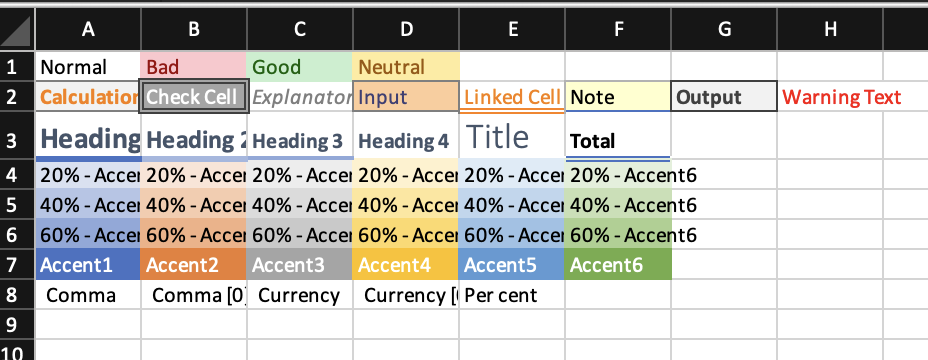
5.10 Styled columns / rows
In addition to individually styled cells, spreadsheets can also have styled columns and rows. Though, these column and row styles are overridden by cell styles. Therefore, if a row is filled with yellow, initialized cells in this row are not impacted by the yellow color. Therefore it is required to individually style these cells too.
wb <- wb_workbook()
# make the entire thing yellow (pick the style from an exisisting cell)
wb$add_worksheet("cols")$add_fill(color = wb_color("yellow"))
wb$set_cell_style_across(cols = "A:XFD", style = wb$get_cell_style(dims = "A1"))
# create an orange cell style
f1 <- create_fill(patternType = "solid", fgColor = wb_color("orange"))
wb$add_style(f1, "f1")
s1 <- create_cell_style(fill_id = wb$styles_mgr$get_fill_id("f1"))
wb$add_style(s1, "s1")
# fill all rows with this orange cell style
wb$add_worksheet("rows")
wb$set_cell_style_across(rows = seq_len(1048576),
style = wb$styles_mgr$get_xf_id("s1"))
# show what happens
mm <- matrix(1:4, 2, 2)
dims <- wb_dims(x = mm, from_dims = "B2", x = mm, col_names = FALSE)
wb$add_data(sheet = "cols", dims = dims, x = mm, col_names = FALSE)
wb$add_data(sheet = "rows", dims = dims, x = mm, col_names = FALSE)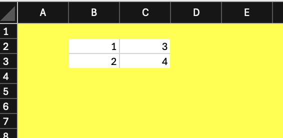
Styling columns and rows is quicker and memory efficient. In the first example all columns are modified, but the entire modification can be boiled down to a single XML string.
A neat example of this is the following: a user wanted to lock certain cells on a worksheet. To achieve this, we have to apply an unlocked style to the entire worksheet. Afterwards we can select a few cells that we want to lock.
wb <- wb_workbook()$add_worksheet()
# create an unlocked cell style
s1 <- create_cell_style(locked = FALSE)
wb$add_style(s1, "s1")
# apply this to the entire worksheet
wb$set_cell_style_across(cols = "A:XFD", style = "s1")
# locked a few cells
dims_list <- c(
wb_dims(1:3, 3:10),
wb_dims(5:10, 8:12),
wb_dims(100:105, 300:408)
)
# lock a few ranges and highlight these in red
for (dims in dims_list) {
message("locking: ", dims)
wb$add_fill(dims = dims, color = wb_color("red"))
wb$add_cell_style(dims = dims, locked = TRUE)
}
#> locking: C1:J3
#> locking: H5:L10
#> locking: KN100:OR105
# protect the worksheet and the workbook
wb$protect_worksheet()
wb$protect()
5.11 Styling with dims
It is possible to style multiple cells at once using dims. This is way faster than looping over rows, columns or both as would be required in the example below.
set.seed(123)
mm <- matrix(sample(0:1, 2500, TRUE), 50, 50)
zeros <- as.data.frame(which(mm == 0, arr.ind = TRUE))
ones <- as.data.frame(which(mm == 1, arr.ind = TRUE))
dims_z <- paste0(mapply(rowcol_to_dims, zeros$row, zeros$col), collapse = ",")
dims_o <- paste0(mapply(rowcol_to_dims, ones$row, ones$col), collapse = ",")
wb <- wb_workbook()$add_worksheet()$
add_data(x = mm, col_names = FALSE)$
add_fill(dims = dims_z, color = wb_color("lightgray"))$
add_fill(dims = dims_o, color = wb_color("darkgray"))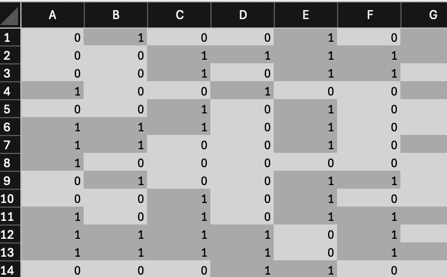